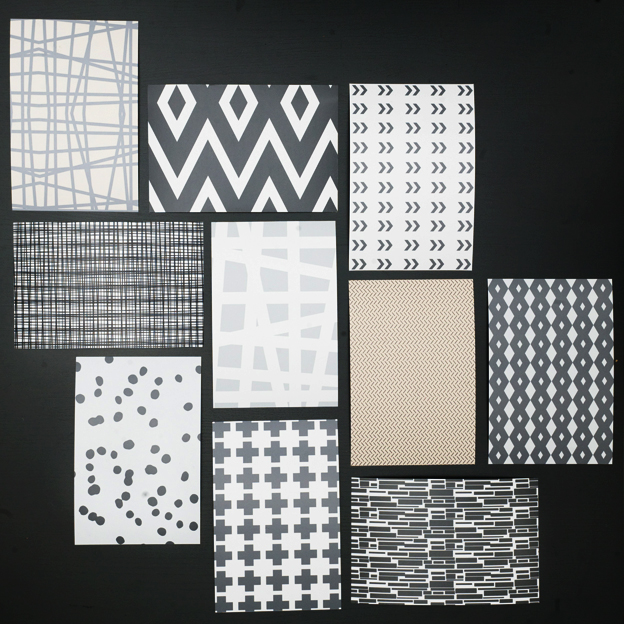
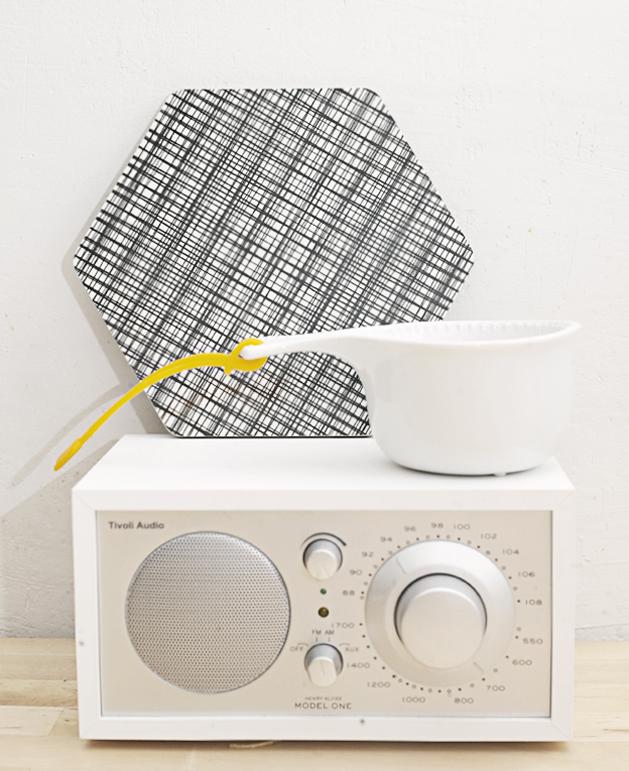
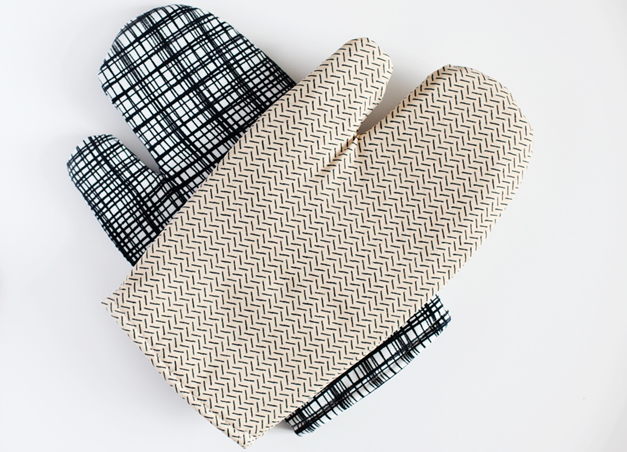
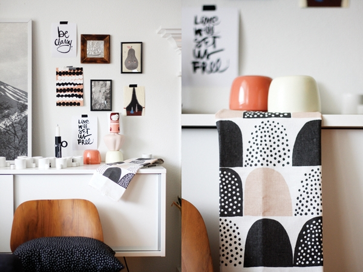
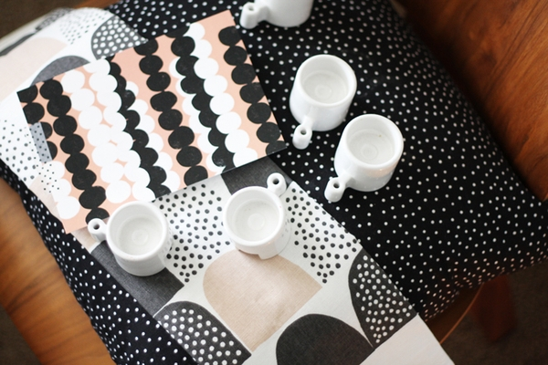

-1-



Textile designers marry a creative vision of what a finished textile will look like with a deep understanding
of the technical aspects of production and the properties of fiber, yarn, and dyes
Designs for both woven and printed textiles often begin with a drawing or watercolor sketch of the finished design. Traditionally, drawings of woven textile patterns
were translated onto special forms of graph paper called point papers which were used by the weavers in setting up their looms.
-2-

